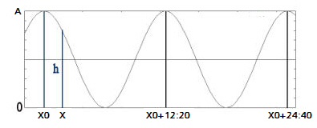

Meteorología
El modelo de Meteorología es el encargado de simular las condiciones meteorológicas tenidas en cuenta por el resto de modelos y / o subsistemas. En la siguiente tabla se resumen los aspectos meteorológicos simulados, indicando los módulos a los que afectan cada uno de ellos:
| Viento | Navegación, Visual, Sonoro |
| Corriente | Navegación, Visual |
| Olas | Navegación, Visual, Sonoro, Radar |
| Marea | Navegación |
| Nubosidad | Visual |
| Niebla | Visual |
| Lluvia | Visual, Sonoro, Radar |
| Ruido | Comunicaciones |
| Profundidad | Navegación (Colisiones) |
La parametrización del modelo de Meteorología se realiza mediante los Escenarios, que a su vez pueden contener:
La definición de los Escenarios incluye los parámetros que caracterizan la marea. Se considera que la marea es uniforme en todo el escenario, es decir, en un Ejercicio todas las unidades se encuentran en la misma fase de marea, independientemente del punto en el que se encuentren.
Para el cálculo de la altura de la marea (h) se modela con una sinusoide con periodo de 12 horas y 20 minutos, a partir del instante de pleamar especificado (X0), y con la amplitud especificada (A). En la siguiente figura se muestra una representación gráfica de la aproximación del cálculo de la altura de marea.

Donde A es la diferencia en altura entre la marea alta y la marea baja.
El valor de altura de marea interviene en los siguientes cálculos
Zonas Meteorológicas
Las Zonas Meteorológicas definen zonas geográficas con movimiento en las que las condiciones meteorológicas de Viento, Corriente, Olas, Nubosidad, Niebla, Lluvia, y Ruido Atmosférico son uniformes.
Los modelos asociados a las unidades que se encuentren dentro de una zona meteorológica tendrán en cuenta las condiciones meteorológicas definidas para la misma, excepto para el viento y la corriente, los cuales pueden ser definidos con mayor precisión por los mapas de viento y corriente.
Si existe más de una zona meteorológica que incluya el punto en el que se encuentra la unidad, se considerará exclusivamente la de menor área.
Mapas de Viento
Los Mapas de Viento se definen como una colección de vectores de viento para cada uno de los cuales se define origen, intensidad y dirección. Estos vectores intervienen en el cálculo del viento resultante en la posición de las unidades, que será la media ponderada en función de la distancia a los vectores más próximos.
El criterio para determinar el viento en un punto es el siguiente:
Mapas de Corriente
Los Mapas de Corriente se definen como una colección de vectores de corriente para cada uno de los cuales se define origen, intensidad, dirección, variación y desfase horario. Estos vectores intervienen en el cálculo de la corriente resultante en la posición de las unidades, que será la media ponderada en función de la distancia a los vectores más próximos.
El criterio para determinar el la corriente en un punto es el siguiente:
La altura de la marea afecta a los vectores de corriente según la variación máxima y desfase horario especificado, de tal forma que cuando la marea está en su máximo crecimiento, la variación máxima se añade a la intensidad, y al contrario en caso de máximo vaciado.
Cálculo de Colisiones con el Fondo
El modelo de meteorología determina la profundidad del mar en cuatro puntos del buque (proa, popa, través de estribor y través de babor) por interpolación entre los valores obtenidos de la cartografía digital, y teniendo en cuenta la altura de la marea.
Estos cuatro valores se utilizan para calcular las colisiones con el fondo, de manera que si el buque entra en contacto con el fondo en alguno de estos puntos, se produce la colisión.